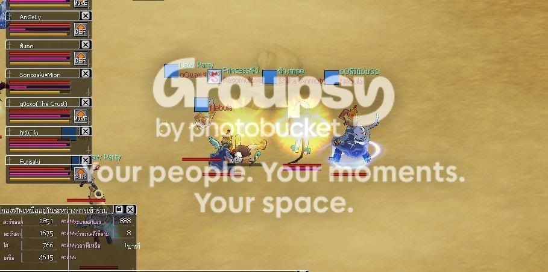

หน้า 221 จากทั้งหมด 308

โพสต์แล้ว:
จันทร์ 29 ก.ย. 2008 9:26 amโดย ECO
เริ่มออกลายมั่วและ แบบว่าหมดเรื่องคุย เฮ่อ
โพสต์แล้ว:
จันทร์ 29 ก.ย. 2008 12:23 pmโดย ECO
MagicianAngel เขียน:เริ่มออกลายมั่วและ แบบว่าหมดเรื่องคุย เฮ่อ
งั้นรอหน้า 333 ต่อแหละกันครับ :lol:
โพสต์แล้ว:
จันทร์ 29 ก.ย. 2008 1:38 pmโดย ECO
300 ก่อนจิ

ไร้คำถาม ก็ไร้คำตอบ เนียนไปวันๆ
โพสต์แล้ว:
จันทร์ 29 ก.ย. 2008 2:17 pmโดย ECO
ตอนนี้ซึ้งแล้ว ว่าไม่มีกระทู้ สไตรเกอ กระทู้เดียว
ที่ไร้สาระ :lol:
โพสต์แล้ว:
จันทร์ 29 ก.ย. 2008 7:08 pmโดย ECO
ข่าวล่า (แต่ก็ไม่ใช่เรื่องใหม่...)
ว่าด้วยแนวคิดที่ใช้Zen แล้วLiq ตามด้วยNova
ทำให้Liq ส่งผล2เท่าตราบเท่าที่วงเวทย์Novaยังคงอยู่
ไปปรับใช้กับสกิวของเอเลได้จริง
zen --> lava --> Strom
ไม่รู้evil soulทำได้ป่าว(กับมืดด้วยกัน)
แต่ไม่รู้ว่าถ้าสมมติ คนนึงzenไว้แล้วลงLava
กับอีกคนZenไว้แล้วร่ายStromทับ
ผลออกมาจะยังเป็นตามด้านบนหรือป่าว
เนื่องด้วยข้าพเจ้ามี ตัวทดลองจำกัด= =
ใครอยากเอาไปต่อยอด ลองทำก็รบกวนที
แล้วบอกผลด้วย
(เพื่อให้บอร์ดเคลื่อนนะเว้ย จะได้มีประเดน(หึหึ อ้างได้ๆ))
ยกเครดิตทั้งหมดให้คุณเหลียงที่ทำให้รู้แนวคิดนี้แล้วได้นำไปลองต่ออีกที
ส่วนเรื่องเหมาะที่จะใช้ หรือ ไม่เหมาะที่จะใช้
อันนี้ต้องอยู่ที่คนเอาไปใช้กันแล้วหละ
ฟันธงไม่ได้ 8)
นโยบายสาระละหน้ายังคงยู่ ไม่เนียนทั้งตลอดชาติแน่นอน>3<
โพสต์แล้ว:
จันทร์ 29 ก.ย. 2008 8:49 pmโดย ECO
หน้า 221 สาระอยู่ไหน ?
โพสต์แล้ว:
จันทร์ 29 ก.ย. 2008 8:59 pmโดย ECO
krittakorn เขียน:
ลืมไปว่าหินประจำทิศ ทิศเราเองยิงได้
ยิงไปหลายที - -
ตรงนี้ ???
โพสต์แล้ว:
จันทร์ 29 ก.ย. 2008 9:11 pmโดย ECO
เป็ดน้อย เขียน:krittakorn เขียน:
ลืมไปว่าหินประจำทิศ ทิศเราเองยิงได้
ยิงไปหลายที - -
ตรงนี้ ???
ขอบคุณมากน้องเป็ดน้อย (หอมแก้ม1ที>3<)
สงสัยนิยามของคำว่า สาระ มันจะไม่เหมือนกันมั้งครับ
แล้วก็มันก็เป็นแค่นโยบายที่ยังคงมีอยู่น่ะครับ
ใครจะร่วมใช้ หรือไม่ร่วมมันก็แล้วแต่น่ะครับ
ถ้าเป็นแบบนี้จะถามไล่ไปทุกหน้าคงไม่ไหว
โดยภาพรวมมันก็มีสาระของมันในแต่ละหน้าอยู่น่ะ
โพสต์แล้ว:
จันทร์ 29 ก.ย. 2008 9:12 pmโดย ECO
ถ่ายรูปกะตาเป้ในวอมา ปกติมะเคยถ่าย แต่วันนี้แต้มสวยจัดเลยขอถ่ายเกบไว้หน่อย

โพสต์แล้ว:
จันทร์ 29 ก.ย. 2008 9:19 pmโดย ECO
เย้ย= = วินาทีสุดท้ายยังจะถ่ายทัน
ช่างกล้องมืออาชีพจริงๆ - -
อยากฆ่าได้เยอะแบบนั้นบ้างจังT-T
เดี๋ยวกลับไปบ้าน เปิดกระท่อมเกณฑ์คนในหมู่บ้านมาเล่น
(ตูอยากมีใส้....T-T)
แต่เล่นแบบนี้ก็สนุกดี ค่อยๆซัพ ค่อยๆยิง
วอมารวมๆก็เกือบอาทิตย์
มีความสุขสนุกดี เพราะคนในทิศแจกฮิวดีมากมายT-T
ตื้นตันใจจริงๆ
โพสต์แล้ว:
จันทร์ 29 ก.ย. 2008 10:21 pmโดย ECO
ตามล่าหาสาระ - -
โพสต์แล้ว:
อังคาร 30 ก.ย. 2008 6:54 amโดย ECO
888 นั่นมันสอยหินไม่ใช่เราะ ?
ติดแสง หินเขียวก้อนละ 10
ตีแปปเดียวได้หลักร้อย
(สาระหรือยังหว่า ?)
โพสต์แล้ว:
อังคาร 30 ก.ย. 2008 8:01 amโดย ECO
ชิกะมันไม่สนใจหินอื่นหรอก นอกจากหินทิศ
เอาแต่ไปบวกโชว์พาว
ว่าแต่เล่นตัวเดิมตลอด ทำให้ประสิทธิภาพในการโชว์พาวลดลงจริงๆแฮะ
ต้องเปลี่ยนเรื่อยๆ จะไม่โดนหมายหัว
เมื่อวานเล่นพระแบบไม่ฮีล โดนตาเป้แอบหลอกด่าไหมนิ
โพสต์แล้ว:
อังคาร 30 ก.ย. 2008 8:25 amโดย ECO
- - ไม่ได้หลอกด่าครับ(ซวยเลยเรา = =")
ไม่ได้หมายถึงงั้นจริงๆ
หมายถึงว่าหลายๆวอมานี้ประทับใจตรงจุดนี้น่ะ
ว่าแต่... ใช่พระที่....ป้ายว่า ไม่เร่ง ไม่ฮิว ปั้มเอง (อะไรประมาณนี้แหละ)หรือป่าวอ่ะครับ :?
อ๋อแค่ยิงหินตามพื้นก็ได้แต้มหรือเนี่ย....
ความรู้ใหม่อีกแล้ว ผมเข้าใจว่ามันต้องเก็บหินด้วยซ่ะอีกถึงได้แต้ม
สาระภาพเลยว่า ไม่ได้เข้าไปอ่าน หลักการวอในเวปให้ละเอียดซักเท่าไหร่
คราวหน้าเจอหินคงต้องยิงบ้างแล้วหละ
ป้าป้า กับ เบบี้มันต่างกันมากเลยหรอเนี่ย
ผมรู้สึกว่าบางทีไล่ในวอไม่ค่อยจะทันเท่าไหร่
ขนาดว่าเทเลไปด้วย ยังต้องอาศัยระยะทางระดับนึงกว่าจะทัน :?
โพสต์แล้ว:
อังคาร 30 ก.ย. 2008 10:23 amโดย ECO
ู^
^
ต้องเข้าใจ มันเปนพระที่พัฒนาไปถึงขีดสุดแล้ว สกิล Ares ยังไม่มีเลย :lol: